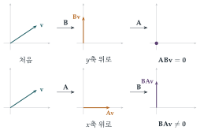

STEP II 1993, 문제 6
계속 읽기 전에 문제를 먼저 읽어 보자. 문제는 STEP Support Programme의 문제 데이터베이스에 있다: step.maths.org/questions/93-s2-q6
도입
행렬(matrix)은 더하고 곱할 수 있으므로 수처럼 다루고 싶어진다. 이 문제는 수에서는 참인 네 가지 “규칙”을 제시하고, 그중 어느 것이 행렬에서도 살아남는지를 물으며 바로 그 유혹을 시험한다. 대부분은 성립하지 않으며, 성립하지 않는 방식이 많은 것을 알려 준다. 행렬의 곱셈은 교환법칙(commutative law)을 만족하지 않는다. 곱이 영행렬인 영이 아닌 행렬들이 있다. 그리고 행렬에 대한 이차방정식(quadratic equation)은 해를 무한히 많이 가질 수 있다.
이러한 실패는 결함이 아니다. 오히려 행렬이 쓸모 있는 이유가 바로 여기에 있다. 행렬은 공간의 변환을 나타내며, 두 변환을 다른 순서로 하면 실제로 다른 결과가 나온다. 1925년 하이젠베르크(Werner Heisenberg)는 양자역학의 물리량이 수가 아니라 행렬처럼 행동한다는 것, 그리고 \(\mathbf{AB} = \mathbf{BA}\)가 성립하지 않는다는 사실이 불확정성 원리(uncertainty principle)의 수학적 형태라는 것을 발견하였다.
시작하기 전에
실수에서 \(ab = 0\)이면 \(a = 0\) 또는 \(b = 0\)인 이유는 무엇인가? 그 논증은 수의 어떤 성질을 사용하며, 그 성질은 행렬에서도 성립하는가?
\(ab = 0\)이고 \(a \neq 0\)이면 양변을 \(a\)로 나누어 \(b = 0\)을 얻는다. 이 논증에는 영이 아닌 모든 수가 역원(inverse)을 가진다는 사실이 필요하다. 영이 아닌 행렬이 반드시 역행렬을 가지는 것은 아니므로(행렬식(determinant)이 0인 행렬은 역행렬이 없다) 이 논증은 무너진다. 기하적인 그림도 함께 염두에 두자. 행렬은 평면의 변환이며, 곱 \(\mathbf{AB}\)는 “\(\mathbf{B}\)를 먼저 하고, 그다음 \(\mathbf{A}\)를 한다”는 뜻이다.
차근차근 풀기
단계 1 \(\mathbf{AB} = \mathbf{0}\)이지만 \(\mathbf{BA} \neq \mathbf{0}\)일 수 있는가?
기하적으로 생각해 보자. \(\mathbf{B}\)가 모든 것을 한 직선 위로 보내고, \(\mathbf{A}\)가 그 직선을 0으로 찌그러뜨리게 하고 싶다. 그러나 반대 순서에서는 \(\mathbf{A}\)가 남긴 것을 \(\mathbf{B}\)가 모두 없애 버려서는 안 된다.
\(\mathbf{A} = \begin{pmatrix} 1 & 0 \\ 0 & 0 \end{pmatrix}\)로 두자. 이 행렬은 \(x\)축 위로의 사영(projection)이다(\(y\)축을 없앤다). 또 \(\mathbf{B} = \begin{pmatrix} 0 & 0 \\ 1 & 0 \end{pmatrix}\)로 두면, 이 행렬은 \((x, y)\)를 \(y\)축 위의 점 \((0, x)\)로 보낸다. 그러면 \[\mathbf{AB} = \begin{pmatrix} 1 & 0 \\ 0 & 0 \end{pmatrix}\begin{pmatrix} 0 & 0 \\ 1 & 0 \end{pmatrix} = \begin{pmatrix} 0 & 0 \\ 0 & 0 \end{pmatrix}, \qquad \mathbf{BA} = \begin{pmatrix} 0 & 0 \\ 1 & 0 \end{pmatrix} \neq \mathbf{0}.\] 따라서 이 명제는 거짓이다(그림 7.1.1).■
단계 2 제곱의 차
모든 곱의 순서를 유지하면서 주의 깊게 전개하면 \[(\mathbf{A} - \mathbf{B})(\mathbf{A} + \mathbf{B}) = \mathbf{A}^2 + \mathbf{AB} - \mathbf{BA} - \mathbf{B}^2.\] 이것은 정확히 \(\mathbf{AB} = \mathbf{BA}\)일 때 \(\mathbf{A}^2 - \mathbf{B}^2\)와 같다. 단계 1의 행렬들에서는 \(\mathbf{AB} - \mathbf{BA} = -\mathbf{BA} \neq \mathbf{0}\)이므로 이 명제는 거짓이다.■
단계 3 \(\mathbf{AX} = \mathbf{0}\)의 영이 아닌 해
\(\det\mathbf{A} \neq 0\)이면 \(\mathbf{AX} = \mathbf{0}\)에 무엇을 할 수 있는가? \(\det\mathbf{A} = 0\)이면 \(\mathbf{Av} = \mathbf{0}\)인 영이 아닌 열벡터(column vector) \(\mathbf{v}\)를 찾을 수 있는가?
\(\det\mathbf{A} \neq 0\)이면 \(\mathbf{A}^{-1}\)이 존재하고 \(\mathbf{X} = \mathbf{A}^{-1}\mathbf{AX} = \mathbf{0}\)이다. 즉 영이 아닌 해는 없다.
\(\det\mathbf{A} = 0\)이면 \(\mathbf{A} = \begin{pmatrix} a & b \\ c & d \end{pmatrix}\), \(ad = bc\)로 쓰자. 벡터 \(\begin{pmatrix} b \\ -a \end{pmatrix}\)와 \(\begin{pmatrix} d \\ -c \end{pmatrix}\)는 \(\mathbf{A}\begin{pmatrix} b \\ -a \end{pmatrix} = \begin{pmatrix} ab - ba \\ cb - da \end{pmatrix} = \mathbf{0}\)을 만족하고, 다른 하나도 마찬가지이다. \(\mathbf{A} \neq \mathbf{0}\)이므로 둘 중 적어도 하나는 영벡터가 아니다. 그것을 \(\mathbf{v}\)라 하자. 그러면 두 열이 모두 \(\mathbf{v}\)인 행렬 \(\mathbf{X}\)는 영행렬이 아니고 \(\mathbf{AX} = \mathbf{0}\)이다. 따라서 이 명제는 참이다.■
단계 4 제곱근은 몇 개인가?
\(\mathbf{X}^2 + \mathbf{AX} + \mathbf{B} = \mathbf{0}\)이 해를 무한히 많이 가지도록 하는 영이 아닌 \(\mathbf{A}\)와 \(\mathbf{B}\)를 찾아라. (힌트: 좌변을 완전제곱 \((\mathbf{X} - \mathbf{I})^2\)으로 만들고, 제곱이 영행렬인 행렬을 생각해 보라.)
둘 다 영이 아닌 \(\mathbf{A} = -2\mathbf{I}\), \(\mathbf{B} = \mathbf{I}\)를 택하자. 그러면 방정식은 \((\mathbf{X} - \mathbf{I})^2 = \mathbf{0}\)이 된다. \(\mathbf{N}^2 = \mathbf{0}\)인 임의의 행렬 \(\mathbf{N}\)은 해 \(\mathbf{X} = \mathbf{I} + \mathbf{N}\)을 주며, 이러한 \(\mathbf{N}\)은 무한히 많다. \[\mathbf{N} = \begin{pmatrix} 0 & t \\ 0 & 0 \end{pmatrix}, \qquad \mathbf{N}^2 = \mathbf{0} \text{, 임의의 실수 } t.\] 따라서 모든 \(t\)에 대하여 \(\mathbf{X} = \begin{pmatrix} 1 & t \\ 0 & 1 \end{pmatrix}\)은 해이고, 이 명제는 거짓이다.■
돌아보기
순서가 중요하다. 모든 전개에서 곱의 순서를 지켜야 한다. \(\mathbf{AB}\)와 \(\mathbf{BA}\)는 대개 다르다.
영인자. 영이 아닌 행렬끼리 곱해서 영행렬이 될 수 있으며, 이 때문에 “이차방정식의 근은 많아야 두 개”라는 논증이 무너진다.
변환으로 생각하라. 각 반례(counterexample)는 행렬이 평면에 무엇을 하는지 그려 보면 쉽게 찾을 수 있었다.

숨은 수학
케일리(Arthur Cayley)는 1858년에 행렬을 단순한 계수의 표가 아니라 더하고 곱할 수 있는 하나의 대상으로 다루는 행렬 대수를 도입하였다. 그는 곱셈이 교환법칙을 만족하지 않는다는 것을 곧바로 알아차렸고, 케일리–해밀턴 정리(Cayley–Hamilton theorem)를 증명하였다. 이 정리는 모든 정사각행렬이 자기 자신의 특성방정식(characteristic equation)을 만족한다는 것이다. 대각합(trace)이 \(t\)이고 행렬식이 \(d\)인 \(2 \times 2\) 행렬에 대해서 이 정리는 \(\mathbf{M}^2 - t\mathbf{M} + d\mathbf{I} = \mathbf{0}\)임을 말하며, 이 사실은 이 장에서 거듭 사용된다(7.4 절). \(2 \times 2\) 실수 행렬 전체는 환(ring)을 이룬다. 덧셈, 뺄셈, 곱셈을 할 수 있지만 곱셈은 교환법칙을 만족하지 않으며, 영인자(zero divisor), 즉 곱이 영이 되는 영이 아닌 원소들이 존재한다.
무한히 많은 제곱근
단계 4는 훨씬 더 인상적으로 만들 수 있다. 방정식 \(\mathbf{X}^2 = \mathbf{I}\)는 뻔한 해 \(\pm\mathbf{I}\)뿐 아니라, 원점을 지나는 직선에 대한 평면의 모든 반사(reflection) \(\mathbf{X} = \begin{pmatrix} \cos\theta & \sin\theta \\ \sin\theta & -\cos\theta \end{pmatrix}\)도 해로 가진다. 두 번 반사하면 아무것도 변하지 않기 때문이다. 이것은 \(\mathbf{I}\)의 제곱근이 원 하나만큼 있다는 뜻이다. 계수가 수인 \(n\)차 다항식(polynomial)이 많아야 \(n\)개의 근을 가지는 것은 수에 영인자가 없기 때문이다. 행렬에는 영인자가 있으므로 이 개수 세기가 성립하지 않는다.
물리학에서의 비가환성
고전역학에서 위치 \(x\)와 운동량(momentum) \(p\)는 수이며 \(xp = px\)이다. 양자역학에서 이들은 \(xp - px = \mathrm{i}\hbar\)를 만족하는 연산자(operator, 무한 행렬)가 된다. 여기서 \(\hbar\)는 플랑크 상수(Planck’s constant)를 \(2\pi\)로 나눈 값이다. 이 하나의 비가환 관계로부터 하이젠베르크의 불확정성 원리, 즉 위치와 운동량을 동시에 정확히 알 수 없다는 사실이 나온다. 1925년 하이젠베르크가 양자역학의 규칙을 발견했을 때 그는 행렬이 무엇인지 알지 못했다. 하이젠베르크가 고안한 이상한 곱셈 규칙이 바로 행렬의 곱셈이라는 것을 알아본 사람은 막스 보른(Max Born)이었다.
사고 기술
새로운 종류의 대상을 만나면, 익숙한 규칙 중 어느 것이 여전히 성립하는지 확인하고, 각 규칙이 정확히 어떤 성질에 의존하는지 알아내라.
“\(ab = 0\)이면 \(a = 0\) 또는 \(b = 0\)”이라는 규칙은 나눗셈에 의존한다. “\((a - b)(a + b) = a^2 - b^2\)”은 교환법칙에 의존한다. 각 규칙이 무엇에 기대고 있는지 알면 그 규칙을 언제 여전히 쓸 수 있는지 알 수 있다.
더 도전하기
언제 교환되는가? \(\begin{pmatrix} 1 & 1 \\ 0 & 1 \end{pmatrix}\)과 교환되는 \(2 \times 2\) 행렬을 모두 구하여라.
영행렬의 제곱근. \(\mathbf{N}^2 = \mathbf{0}\)인 \(2 \times 2\) 실수 행렬 \(\mathbf{N}\)을 모두 구하여라. (힌트: 케일리–해밀턴 정리를 사용하여 \(\operatorname{tr}\mathbf{N} = \det\mathbf{N} = 0\)임을 보여라.)
반사. 모든 반사 행렬 \(\begin{pmatrix} \cos\theta & \sin\theta \\ \sin\theta & -\cos\theta \end{pmatrix}\)을 제곱하면 \(\mathbf{I}\)가 됨을 보이고, 이 행렬이 반사의 기준으로 삼는 직선을 구하여라.
케일리–해밀턴. 모든 \(2 \times 2\) 행렬이 \(\mathbf{M}^2 - (\operatorname{tr}\mathbf{M})\mathbf{M} + (\det\mathbf{M})\mathbf{I} = \mathbf{0}\)을 만족함을 직접 계산하여 증명하여라.
더 읽을거리
Gilbert Strang, Introduction to Linear Algebra (Wellesley-Cambridge). 가장 널리 쓰이는 입문 선형대수(linear algebra) 교재로, 이해를 강조한다.
Sheldon Axler, Linear Algebra Done Right (Springer; 온라인 무료). 행렬보다 선형사상(linear map)을 중심에 둔, 좀 더 추상적인 접근이다.
Jim Baggott, The Quantum Story (Oxford University Press). 하이젠베르크의 행렬역학을 포함한 양자역학의 역사이다.